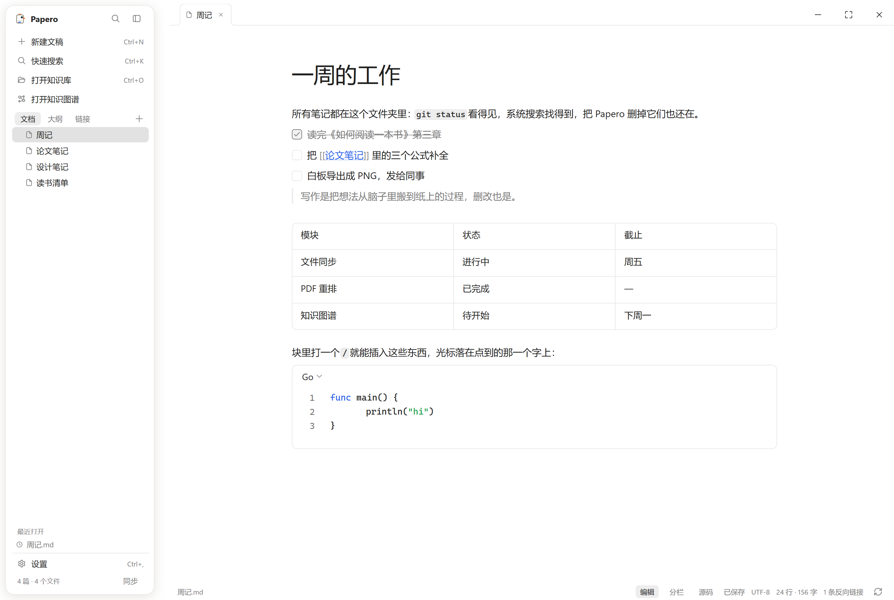

文稿就是文件
知识库是一个普通文件夹，笔记就是普通的 .md。不用导入，不用导出；Git 能管，系统搜索能找到，把 Papero 删掉它们也还在。
Windows 10+ · 一个可执行文件 · MIT
Papero 是世界语里的「纸」。它把 Markdown、PDF、Word、图片和白板放进同一个窗口，全部由 Go 在 GPU 上原生绘制——没有 WebView，没有 Electron，没有 JavaScript。

设计原则
知识库是一个普通文件夹，笔记就是普通的 .md。不用导入，不用导出；Git 能管，系统搜索能找到，把 Papero 删掉它们也还在。
窗口、排版、编辑器、白板都是 Go 在 GPU 上画的。画面不动时它什么也不画——所以启动快，占内存少。
没有安装器依赖，没有运行时，没有 node_modules。下载下来双击就开，卸掉就是删一个文件。
功能
点任意一块就编辑它的 Markdown 源码，光标落在你点的那个字上，其余块保持排版。空块里打一个 / 插入代码、公式、表格。
输入 [[ 自动补全全库；改名时全库引用跟着改，删除前告诉你会断哪几篇。
按双链自动布局，按目录分组着色，双击节点跳到那篇文稿；可以嵌在窗口里，也能独立成窗。
纯 Go 解析内容流，按原版面位置重排文字与图片——文字可选中、可搜索，还能高亮批注。
.excalidraw 原生打开、原生画，和 Excalidraw 文件互通——拿去别处也能用。
行内公式跟着基线走，块级公式各自居中；分数线、根号、上下标、求和上下限都是排出来的。
文件夹、Git、本库仓库、WebDAV 四种远端，文件级三方合并，冲突不吞内容。
背景、前景、强调三个色就能派生整套界面；中英文界面随时切换，缺了文案会显示 key 而不是空白。
能打开什么
| 类型 | 它怎么处理 |
|---|---|
| Markdown | 分栏（源码 + 实时预览）、纯预览、纯源码三种显示方式；语法高亮、任务框可点、图片内联、公式与表格。 |
| 图片 | PNG / JPEG / GIF / WebP / BMP / SVG；适应窗口、1:1、缩放，大图不糊。 |
| 纯 Go 解析，按原版面位置重排；翻页、缩放、选中文字、高亮批注。 | |
| Word | .docx 直接读成 Markdown 排版：标题、粗斜体、列表、表格。 |
| 纯文本 | 代码、日志、CSV，按扩展名高亮。 |
| 白板 | .excalidraw 原生打开与编辑，双向兼容。 |